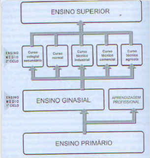

Estrutura curricular do curso técnico em informática integrado ao ensino médio.
Vendo as origens do IFSP campus São Paulo, que por lei de criação nasce para acolher os desvalidos da sorte, mas na pratica são matriculados os filhos de operários, profissionais urbanos e os próprios operários, observa-se desde a sua origem uma grande diferença comparada com as outras EAAs
De 1910 a 1959 o ensino técnico evolui de primário a ginásio industrial e de 1959 até 1997 você tem o ensino técnico de nível médio de forma integrada, quando no governo do presidente Fernando Henrique Cardoso através do Decreto Lei 2.208/97 a separação do curso profissionalizante do ensino propedêutico (médio).
Somente em 2004 no governo do presidente Luiz Inácio Lula da Silva com o Decreto 5.154/2004 que revoga o Decreto 2.208/97 que voltamos a ter o ensino técnico de nível médio integrado.
Começa um período de grandes mudanças, entre 1959 e 1961 foram promulgados duas leis e um decreto alterando a estrutura do ensino técnico industrial: A Lei n.º 3.552, de 16 de fevereiro de 1959, que estabelecia uma nova regulamentação para as escolas técnicas federais (propiciava através de seu art. 16, autonomia didática, administrativa e financeira a essas escolas); o Decreto n.º 47.038, de 16 de outubro de 1959 que regulamentava o ensino industrial, repetia a Lei n.º 3.552/59 em vários pontos, demarcava a rede federal de escolas técnicas e determinava a atribuição da Diretoria do Ensino Industrial; e a Lei de Diretrizes e Bases da Educação Nacional, Lei n.º 4.024, de 20 de dezembro de 1961.
Os níveis de ensino segundo a LDB de 1961
De 1959 a 1965 temos o fim dos cursos industriais e início dos cursos técnicos de nível médio no campus São Paulo. Havia o curso técnico de Construção de Máquinas e Motores com disciplinas propedêuticas e especiais.
As disciplinas propedêuticas eram: Português, Inglês, Matemática, Física, Química, História Universal e Geografia Geral.
As disciplinas de “cultura técnica” eram: Desenho, Tecnologia, Higiene Industrial, Organização do Trabalho, Complementos de Matemática, Construção de Aparelhos Mecânicos, Máquinas e Motores, Mecânica Aplicada, Eletrotécnica, Ensaios em Laboratórios de Máquinas e Noções de Resistência de Materiais.
O Curso Técnico em Edificações apresentava as seguintes matérias de “cultura técnica”: Desenho Técnico, Tecnologia, Higiene Industrial, Organização do Trabalho, Contabilidade Industrial, Noções Gerais de Resistência dos Materiais, Topografia, Instalações Domiciliares, Construção de Edifícios, Ensaios em Laboratório Tecnológico, Complementos de Matemática, Revestimentos.
O Curso Industrial que existiam eram: Curso Industrial Básico de Mecânica de Máquinas (artífices em Mecânica de Máquinas); Curso Industrial Básico de Fundição (artífices em Fundição) e o Curso Industrial Básico de Serralheria (artífices em Serralheria); Curso Industrial Básico de Cerâmica. As disciplinas de cultura geral desses alunos eram: Português, Matemática, Ciências Físicas e Naturais, Geografia do Brasil e História do Brasil. Havia também as disciplinas de Práticas Educativas: Educação Física e Canto Orfeônico.
A Escola Técnica Federal de São Paulo foi a denominação que a Escola Técnica de São Paulo adquiriu a partir da Lei n.º 4.759 de 20 de agosto de 1965 e a partir dessa data havia apenas os cursos técnicos, haja vista que foram extintos os cursos Industriais.
Os cursos técnicos de nível médio são os cursos de Mecânica, Eletrotécnica, Edificações e posteriormente surgem os cursos de Eletrônica, Telecomunicações (1977) e Processamento de Dados (1978).
Ao longo do tempo a escola se modifica e os curso também, atualmente no câmpus São Paulo do IFSP você tem os curso integrados de Mecânica, Eletrotécnica, Eletrônica, Informática e Desenvolvimento de Sistemas.